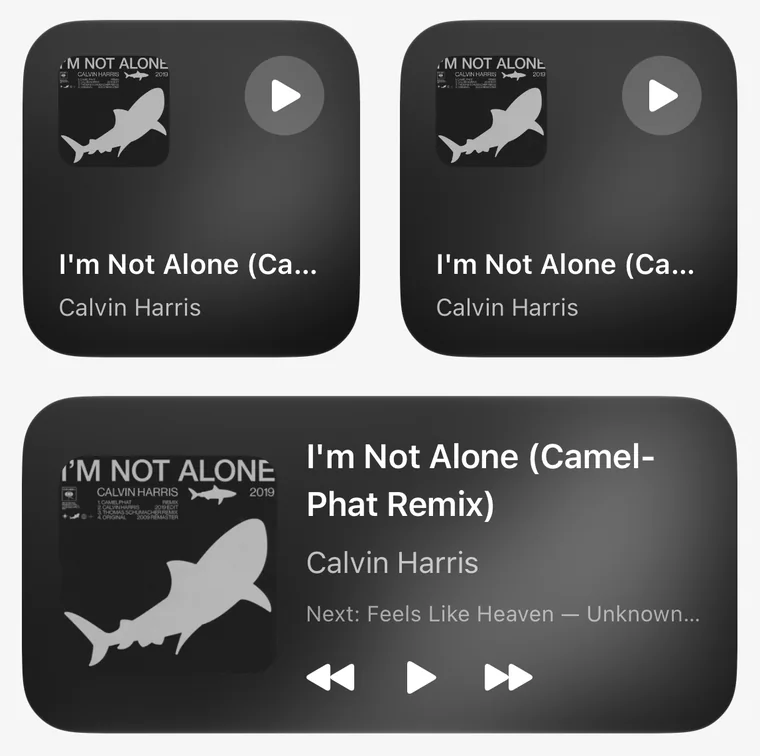

Your music, wherever it's hiding.
Files on your iPhone. A folder that stays in sync. Your Jellyfin or Subsonic server. Or paste a list of songs from literally anywhere and MRSC builds the playlist.
MRSC · Free offline music player for iPhone
MRSC plays the music you actually own, from your iPhone, a folder or your own server. Built for iOS 26 with Liquid Glass. Free. No ads. No account. No algorithm deciding you're a “Chill Vibes” person now.
Want in early? Join the Discord and get the TestFlight link first.
Every theme swaps the colors, the fonts, the cover shape, the player layout and even the tab bar. Seven come built in. Some of them look suspiciously familiar.
Built a theme you're proud of? Show it off on Discord.
Rebuild the player row by row. Rename every tab. Rearrange Home. Give each pair of headphones its own EQ. Pick the color of the startup animation. Every. Single. Thing. Is a setting.
That's not even all of them. We ran out of website.
Quite well, actually.
Files on your iPhone. A folder that stays in sync. Your Jellyfin or Subsonic server. Or paste a list of songs from literally anywhere and MRSC builds the playlist.
No lyrics in the file? MRSC listens and writes them, right on your iPhone. Word by word, translated if you like. Car karaoke is now your problem.
“never played”, “favorites under 3 min”, “something calm for reading”. It gets it. In German, too.
Track Mix finds where a song really ends and locks the next beat onto it. Crossfades up to 20 seconds, DJ mode if you're feeling it.
Eight styles, eight palettes, one dice. Or hit Match Vibe and MRSC reads the song title and picks the mood for you.
10-band EQ, loudness matching and a whole Audio Lab. Your headphones, the car and that one album each keep their own sound.
Grab the record. Spin it. Flick it. It's the first thing you see in the app and nobody has ever just tapped “Continue”.
CarPlay. Widgets. Live lyrics in the Dynamic Island. Animated covers on your Lock Screen. And Siri, if you say it nicely.

The app icon and the startup animation follow. Go on, tap one. This page will follow too.
Organize finds misspelled artists, duplicate albums, swapped titles and missing covers, then fixes them all in one go.
all in one app btw
Things we left out
No ads.
No subscription.
No account.
No “Are you still listening?”
No podcast you didn't ask for.
Just your music, looking however you want.
*by which we mean these people have opened it at least once.
Made up. Not legally reviews. The app is real though.
The boring facts, for people and for robots.
MRSC is a free music player for iPhone that plays the music you own: files on your iPhone, a folder that stays in sync, or your own Jellyfin, Navidrome or Subsonic server. It works offline, has no ads and no account, uses Apple's Liquid Glass design and lets you customize almost everything.
Yes. No ads, no subscription, no account. The app's own About page says so and we're not going to argue with it. If you'd like to say thanks anyway, you can buy the developer a coffee on Ko-fi.
Yes. The whole app is on GitHub. Read it, fork it, or add the setting you think is missing and send a pull request.
Not yet. MRSC is coming to TestFlight first, so you can try the beta before it lands in the App Store. Join the MRSC Discord and you get the TestFlight link first.
On the MRSC Discord. Post bugs, ideas and your weirdest themes there. Someone actually reads it, usually faster than is healthy.
From you. Files on your iPhone or iCloud Drive, a folder that stays in sync, or your own music server: Jellyfin, Navidrome and anything else that speaks Subsonic (Gonic, Airsonic, Ampache, Nextcloud Music). It plays MP3, AAC, ALAC, FLAC, WAV, AIFF and friends.
Yes. Music on your iPhone always plays offline. Music from your server can be downloaded, then you flip on Offline Mode. Favorites and plays you change offline sync back once you're online again.
Yes. MRSC is built for iOS 26 and uses Apple's Liquid Glass for the tab bar, the player controls and the buttons. Themes can tint the glass with your accent color and change blur, transparency and corner radius.
Very. Seven built-in themes, or build your own: accent color, background, font, letter width, textures, cover shape, player layout, button row, mini player, tab bar, Home screen and app icon. Themes can be shared as .mrsctheme files.
Nope. MRSC plays the music you already have. Free streaming of everything would be lovely, but lawyers exist. You can paste a song list from anywhere and MRSC builds the playlist from your own library.
Lyrics recognition, translation, smart search and the daily “Made for You” mixes all run on your iPhone. When you ask MRSC to fix tags or find covers, it looks them up online (iTunes Search, MusicBrainz, Cover Art Archive).
iPhone only. Portrait only. We have priorities.
Yes.
Free on iPhone. Your music, your colors, your problem.
Free forever, running on coffee. Buy one on Ko-fi